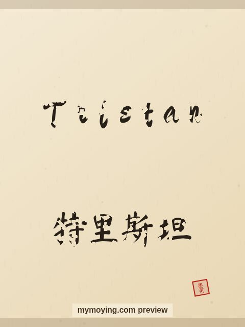

Tristan in Chinese Calligraphy
Curious how Tristan looks in Chinese brush calligraphy? This page shows the name, its Chinese transliteration 特里斯坦 (Tè lǐ sī tǎn), and the story behind it.

Sample. “Tristan” in the Regular (楷书) brush style with the Chinese name 特里斯坦 (Tè lǐ sī tǎn). The paid file removes the watermark.
The Chinese characters for Tristan
As a transliteration, Tristan is usually written 特里斯坦 (Tè lǐ sī tǎn). Each character is listed below with its own dictionary meaning — the name is chosen by sound, not by meaning, and Moying does not translate names. Please have a person review the characters before any permanent use such as a tattoo.
Origin and meaning
With Celtic origins, Tristan is usually read as “sorrowful, or noise”.
About the name Tristan
In the legend of Tristan and Isolde, Tristan is a Cornish knight.
As a gift or a tattoo
The name Tristan suits a framed gift, and the clean high-resolution file also works as a tattoo design.
Open Tristan in the generatorFree watermarked preview. $1.99 once for a clean high-resolution download of this name in every style and setting. No subscription. Digital product, delivered instantly; see Terms.